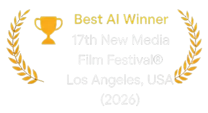
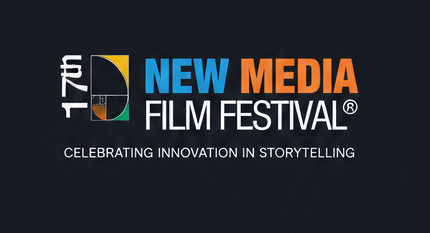

Featured Project
Sunflowers
In a future where artificial intelligence governs the world, a boy’s simple question about sunflowers challenges the boundaries of memory, history, and human dignity.
-

Awards & Nominee
* Information is updated as of June 2026.

The New Media Film Festival® celebrates innovation in storytelling across film, art, and emerging media. Since its founding, the festival has championed creators who push the boundaries of technology and narrative — from virtual production and AI-driven cinema to immersive and interactive experiences.
Recognized as a global platform for next-generation filmmakers, the festival brings together artists, technologists, and audiences in Los Angeles to explore how new tools can expand the language of cinema while honoring the craft of traditional filmmaking.
About the Festival >